도착 · 회복 · Gràcia 축제
시간대별 일정, 이동 정보, 지도와 관람 포인트를 확인하세요.
예상 도보55분
대중교통32분
택시·차량0분
일정 지점6곳
여행 전 확인: Gràcia 축제 공식 기간은 2026년 8월 15~21일. 너무 피곤하면 21일 밤으로 이동.
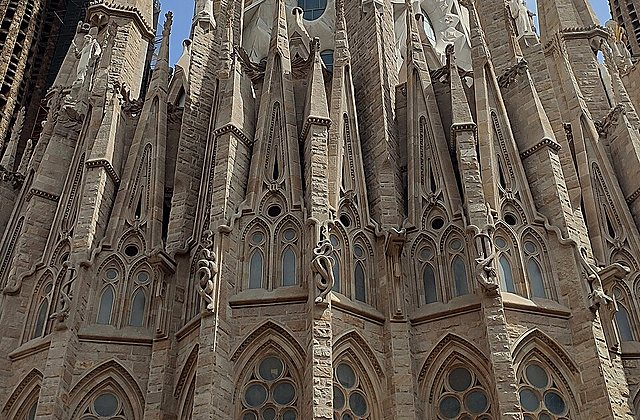
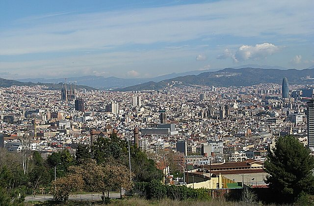
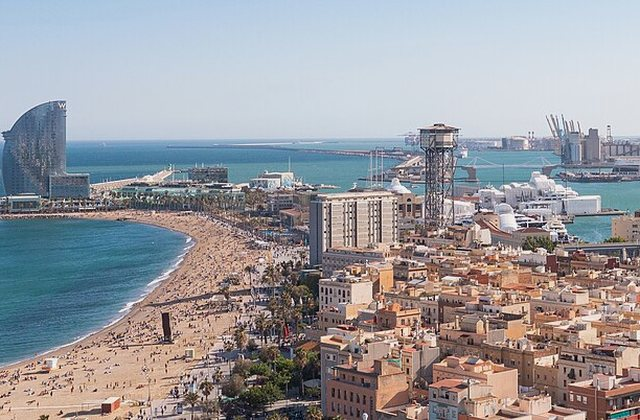
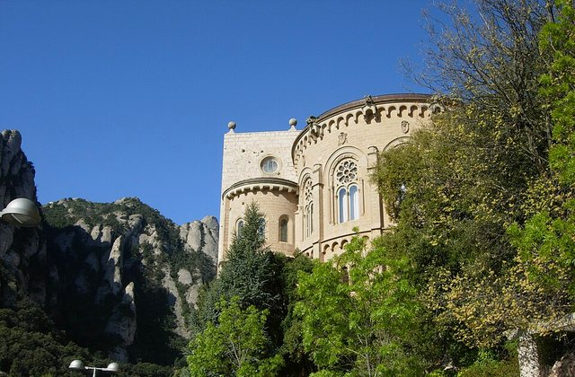
왜 중요한가Barcelona Airport은(는) 오늘의 흐름에서 다음 장면으로 자연스럽게 이어지는 핵심 지점이다.
볼 포인트입국·수하물. 대표 풍경과 공간의 분위기에 집중한다.
실전 팁혼잡하면 핵심을 보고 이동하고, 예약 장소는 15분 일찍 도착한다.
시간 관리표시된 이동시간에 환승·대기 10분을 더한다.
AerobúsBarcelona El Prat Airport → Urgell Metro Barcelona35분 · 경로 ↗ 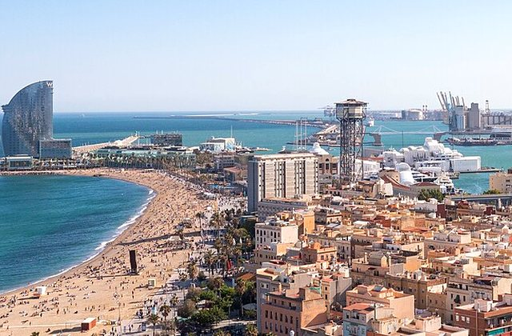
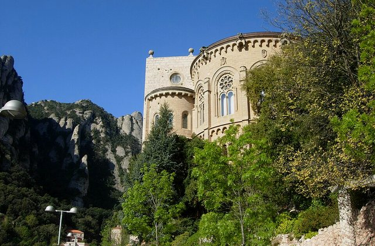
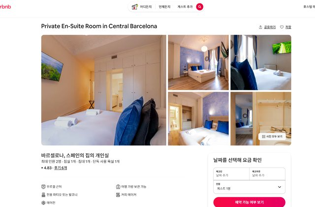
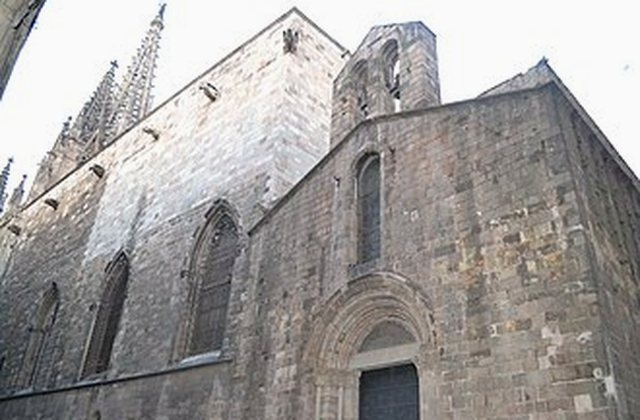
왜 중요한가Urgell 숙소 인근은(는) 오늘의 흐름에서 다음 장면으로 자연스럽게 이어지는 핵심 지점이다.
볼 포인트짐 보관. 대표 풍경과 공간의 분위기에 집중한다.
실전 팁혼잡하면 핵심을 보고 이동하고, 예약 장소는 15분 일찍 도착한다.
시간 관리표시된 이동시간에 환승·대기 10분을 더한다.
도보Urgell Metro Barcelona → Mercat de Sant Antoni Barcelona12분 · 경로 ↗ 
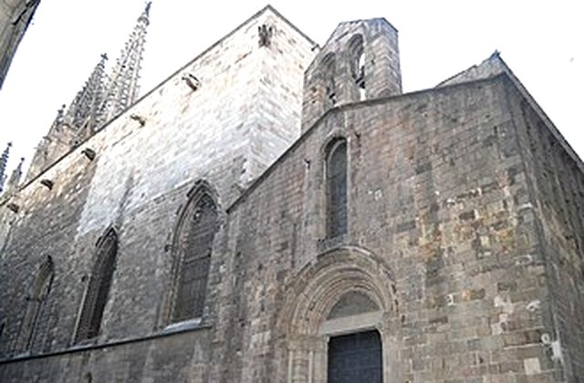
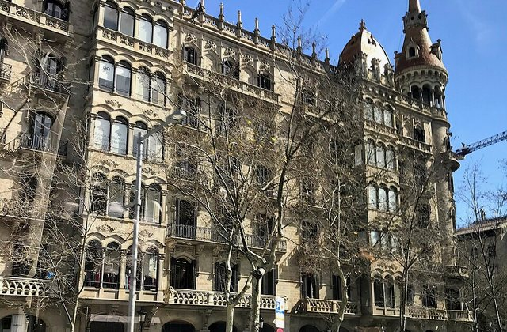
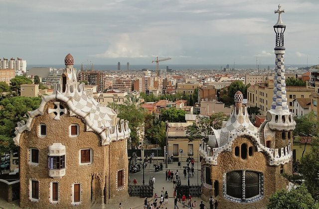
왜 중요한가Mercat de Sant Antoni은(는) 오늘의 흐름에서 다음 장면으로 자연스럽게 이어지는 핵심 지점이다.
볼 포인트브런치. 대표 풍경과 공간의 분위기에 집중한다.
실전 팁혼잡하면 핵심을 보고 이동하고, 예약 장소는 15분 일찍 도착한다.
시간 관리표시된 이동시간에 환승·대기 10분을 더한다.
도보Mercat de Sant Antoni Barcelona → Urgell Metro Barcelona12분 · 경로 ↗ 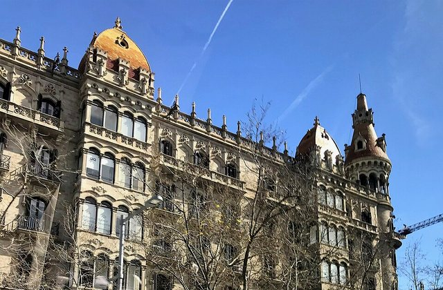
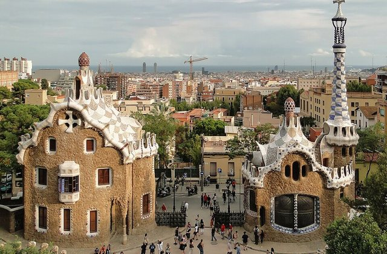
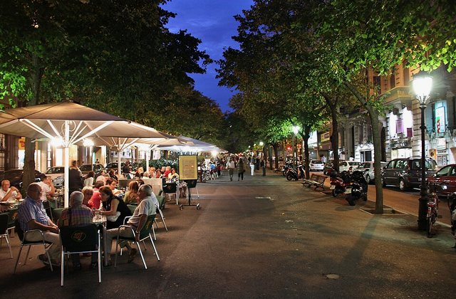
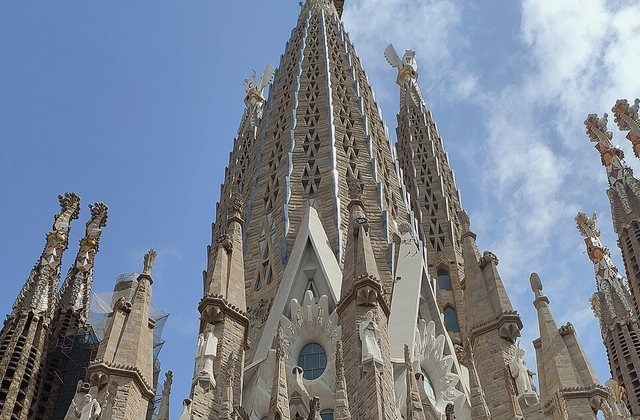
왜 중요한가숙소 휴식은(는) 오늘의 흐름에서 다음 장면으로 자연스럽게 이어지는 핵심 지점이다.
볼 포인트샤워·낮잠. 대표 풍경과 공간의 분위기에 집중한다.
실전 팁혼잡하면 핵심을 보고 이동하고, 예약 장소는 15분 일찍 도착한다.
시간 관리표시된 이동시간에 환승·대기 10분을 더한다.
MetroUrgell Metro Barcelona → Festa Major de Gracia Barcelona20분 · 경로 ↗ Vila de Gràcia
장식 거리·광장 축제
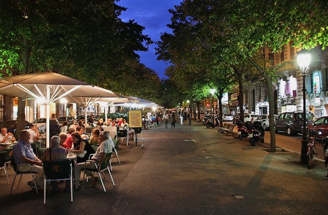
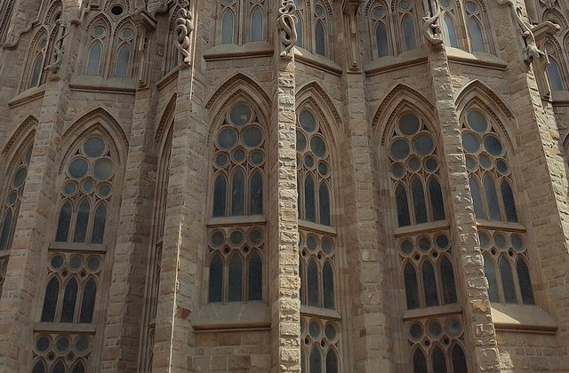
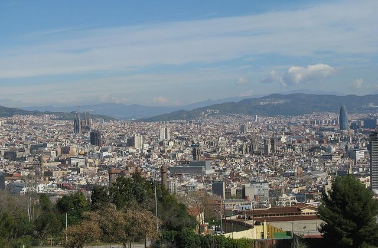
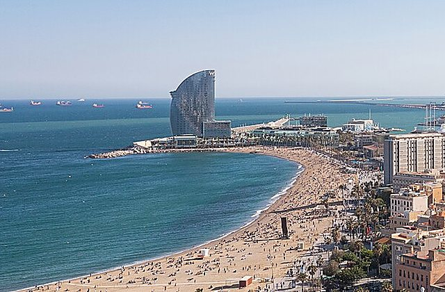
왜 중요한가Vila de Gràcia은(는) 오늘의 흐름에서 다음 장면으로 자연스럽게 이어지는 핵심 지점이다.
볼 포인트장식 거리·광장 축제. 대표 풍경과 공간의 분위기에 집중한다.
실전 팁혼잡하면 핵심을 보고 이동하고, 예약 장소는 15분 일찍 도착한다.
시간 관리표시된 이동시간에 환승·대기 10분을 더한다.
MetroFesta Major de Gracia Barcelona → Urgell Metro Barcelona20분 · 경로 ↗ 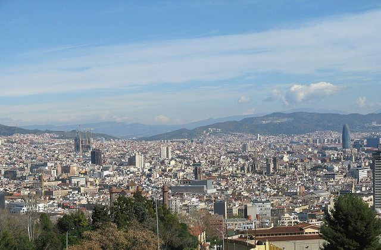
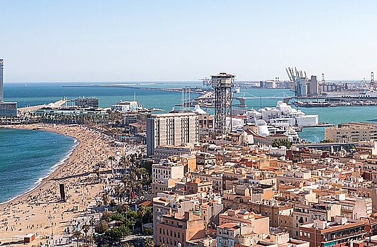
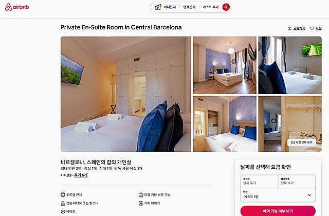
왜 중요한가숙소 복귀은(는) 오늘의 흐름에서 다음 장면으로 자연스럽게 이어지는 핵심 지점이다.
볼 포인트첫날 종료. 대표 풍경과 공간의 분위기에 집중한다.
실전 팁혼잡하면 핵심을 보고 이동하고, 예약 장소는 15분 일찍 도착한다.
시간 관리표시된 이동시간에 환승·대기 10분을 더한다.